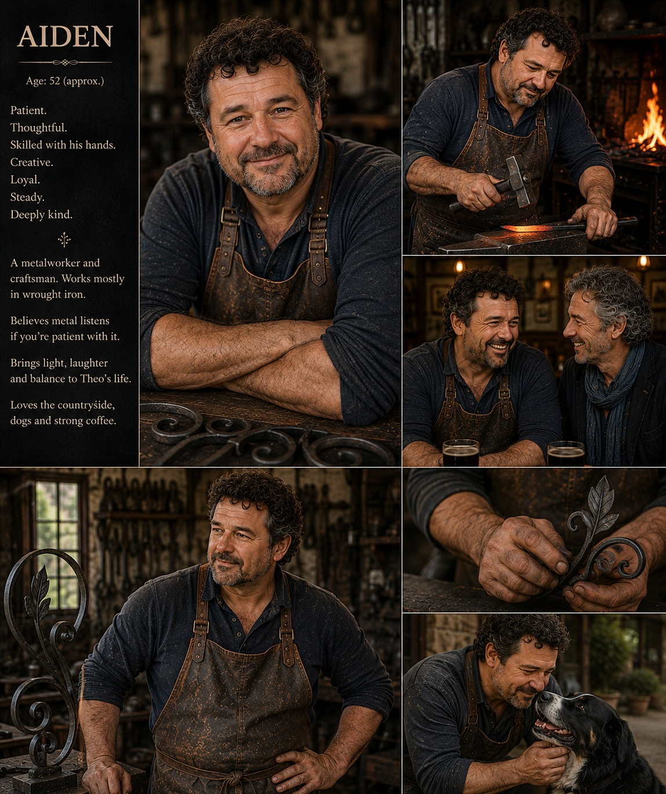
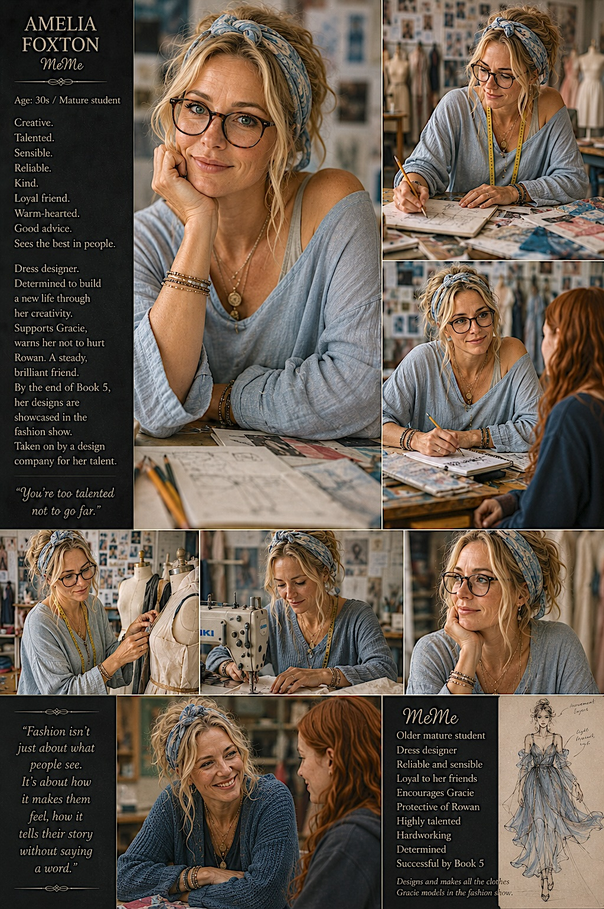
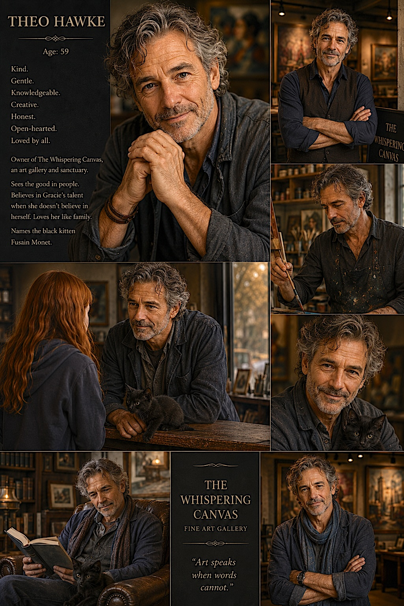
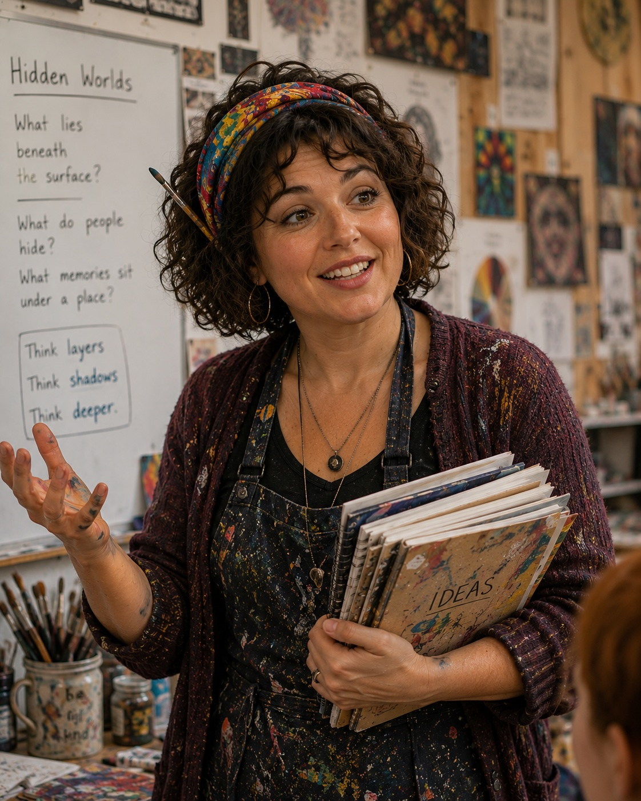
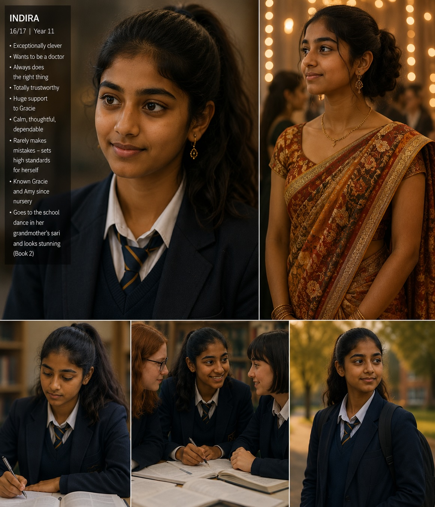
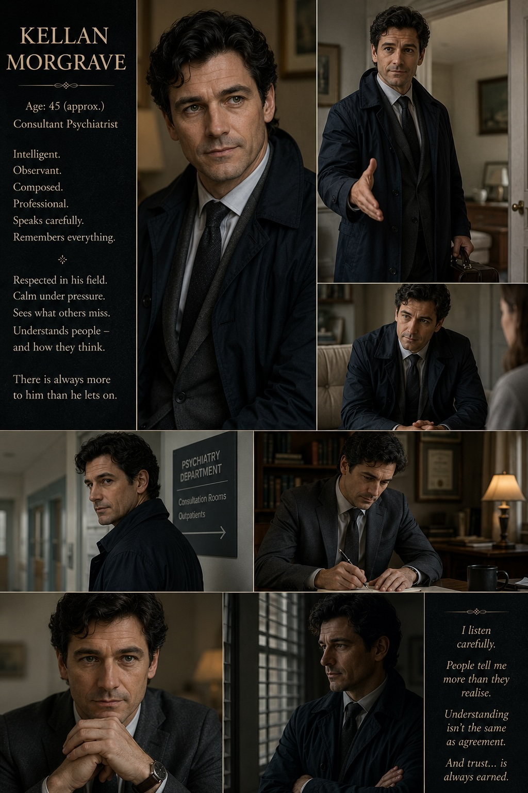
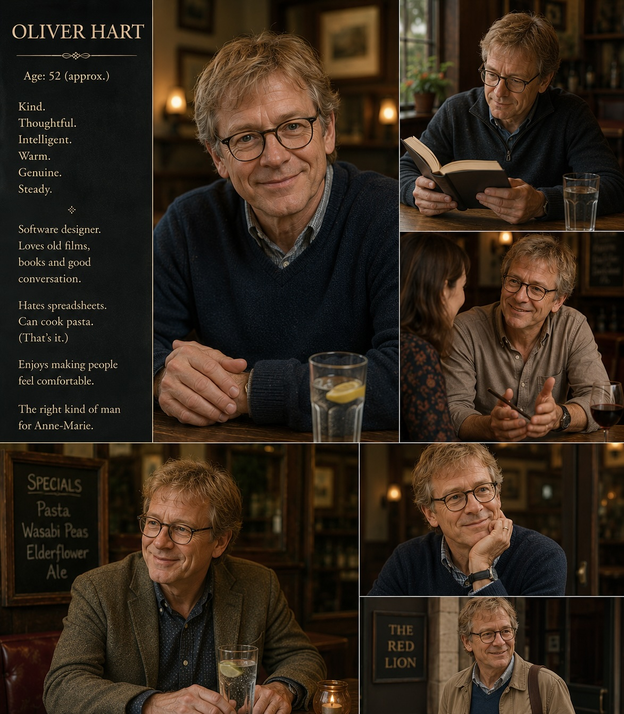
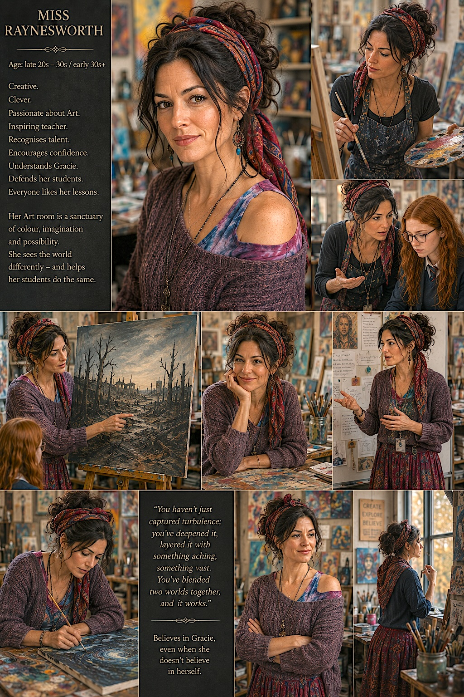
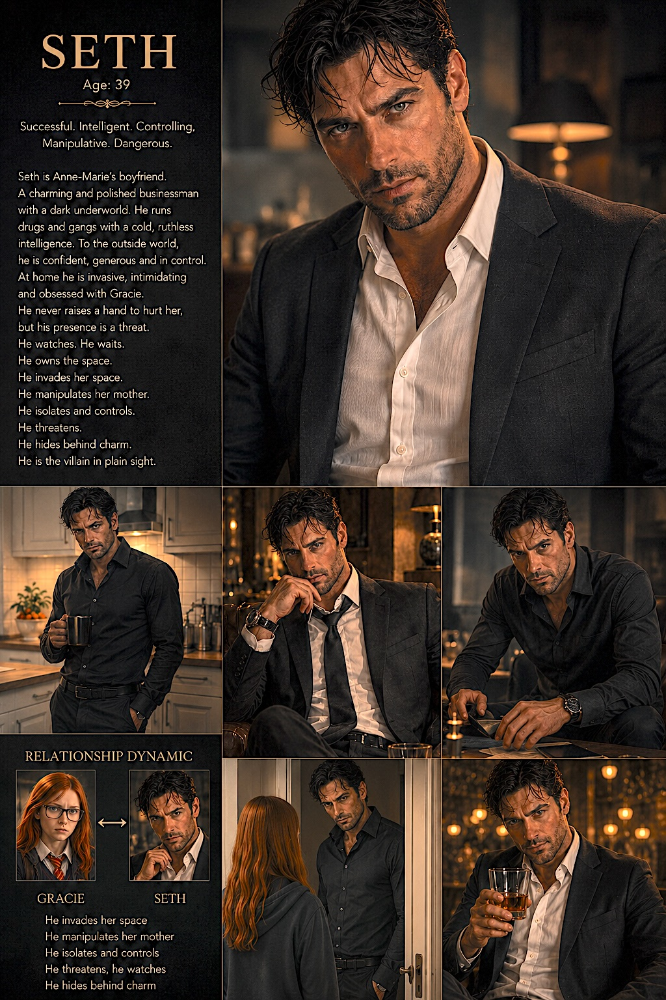
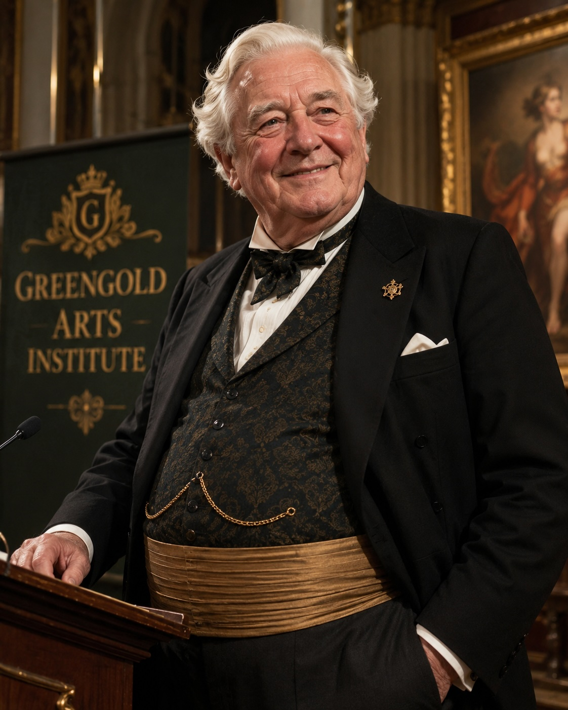

Aiden
Aiden features in books 4 and 5. He is a close friend of Theo.

Amelia Foxton - MeMe
MeMe becomes a close friend of Gracie. She attends the Greengold institute.

Amy
Amy has been Gracie's best friend since nursery alongside Tommy she is always there when times are good and when, so often, for Gracie they are hard.

Theo Hawke
Theo is the owner of The Whispering Canvas, a local art gallery. This place is Gracie's sanctuary, a place where someone understands her and never turns her away.

Anne-Marie Fellows
Anne-Marie is Gracie's mother. A single parent, she is a lawyer, work driven and has little or no time for her daughter.

Bernie Saunders
Bernie is an Art lecturer at the Greengold Arts Institute. She is a close friend of Sally Raynesworth.

Gracie Fellows
Gracie is the central character of The Calling Stone Chronicles. She is 16, dyslexic. Battling bullies and school pressure, monsters and magic.

Indira
Gracie's other close friend. Indira is exceptionally clever. Loyal and kind. She supports Gracie along with Amy and Tommy.
Jordan Townsend
Simon's best friend. Into Drama, loud, and annoying a continual pressure on Gracie in Strands of Shadow and Truth.

Kellan Morgrave
Kellan Morgrave is a psychiatrist linked to the courts, hospital and prison. He appears in books 4 and 5.
Laurel Whitmore
Laurel is a victim of unwanted male attention in Gracie's school.
Maisie Biggerstop
Maisie is a year ten student who appears in book three. She is influenced by something Gracie does and insists on acting on it.

Oliver Hart
Oliver Hart enters Gracie's story in book 4, Weaves of Wisdom and Resolve.

Poppy Henshaw
Mrs Poppy Henshaw - Primary Teacher at Marshview Primary School

Rob and Denise Maidment
Tommy's parents. Denise is a secondary English teacher. Rob is an engineer.

Sally Raynesworth
Sally Raynesworth is a strong support for Gracie. Art is her one strong subject and Sally recognises both her talent and her problems.

Seth Ravenwood
The new man in Gracie's mother's life. Charming, good looking and not to be trusted.

Simon Crowley
The school heart-throb. Too interested in Gracie for her liking. Into Drama.

Sir Malcolm Fieldstow
Sir Malcolm Fieldstow is the owner of Greengold Arts Institute. A significant patron of the arts and prominent figure in the local area.

Tommy Maidment
Gracie's best friend since nursery. Loyal, protective and an excellent footballer.